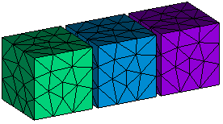

Content of this mini-tutorial:

 cfdmsh 4.0 documentation
cfdmsh 4.0 documentation cfdmsh 4.0 documentation



The purpose of this tutorial is to show how to export/import mesh hypotheses and configurations using cfdmsh.
The following cfdmsh functions will be used:
NB: This tutorial was tested on Salome 7.7.1 on Linux with the following settings:
File > Preferences... > Geometry > Default display mode > Wireframe.
File > Preferences... > Geometry > Hide input objects from viewer > OFF.
Content of this mini-tutorial:

File > New
Click on  in the toolbar
in the toolbar

[Ctrl] + [T] → Select the "cfdmsh.py" file on your computer
New Entity > Primitives > Box → Apply and Close
Click on  in the 3D window toolbar
in the 3D window toolbar

Select "box_1" → New Entity > Group > Create Group →
Select the icon → Set the "Name" to "refined" →
Select an arbitrary face like in the following picture →
Click on "Add" → Apply and Close
Select "box_1" → New Entity > Group > Create Group →
Select the icon → Set the "Name" to "inlet" →
Select an arbitrary face like in the following picture →
Click on "Add" → Apply and Close
New Entity > Primitives > Box →
Set respectively "Dx", "Dy" and "Dz" to 400, 150 and 100 →
Apply and Close

Select "Box_2" → Right-click > Show Only
Select "box_1" → New Entity > Group > Create Group →
Select the icon → Set the "Name" to "refined" →
Select an arbitrary face like in the following picture →
Click on "Add" → Apply and Close
Select "box_1" → New Entity > Group > Create Group →
Select the icon → Set the "Name" to "inlet" →
Select an arbitrary face like in the following picture →

Click on "Add" → Apply and Close
Click on  in the toolbar
in the toolbar
Select "Box_1" → Mesh > Create Mesh →
Set "Algorithm" to "Netgen 1D-2D-3D" →
Click on beside "Hypothesis" > NETGEN 3D Parameters →
OK → Apply and Close
Select "Mesh_1" → Mesh > Create Sub-mesh →
Select "refined" in the source cube ("Box_1") →
Set "Algorithm" to "Netgen 1D-2D" →
Click on beside "Hypothesis" > NETGEN 2D Parameters →
Set "Max. Size" to 10 → OK →
OK → Apply and Close
Select "Mesh_1" → Mesh > Compute → Close
Select "Mesh_1" → Mesh > Create Groups from Geometry →
Select "inlet" in the source cube ("Box_1") → Apply and Close
Select "inlet" inside "Mesh_1" > "Groups of Faces" → Right-click > Show
Select "Box_2" → Mesh > Create Mesh → Apply and Close
Here are hypotheses used in "Mesh_1". We want now to use them in a new mesh associated to the "Box_2".
Right-click in the 3D window > Hide All
Select "Mesh_1" → In the Python console, type:
ExportMeshConfiguration( )
or:
emc( )
This command created a file called "cfdmsh_msh" in your home folder.
Select "Mesh_2" → In the Python console, type:
ImportMeshConfiguration( )
or:
imc( )
Select "Mesh_2" → Mesh > Compute → Close
Select "inlet" inside "Mesh_2" > "Groups of Faces" → Right-click > Show
The mesh configuration, including hypothesis names, sub-meshes and groups from geometry, was well copied from the source mesh to the target mesh.
Select both "NETGEN 3D Parameters_1" and NETGEN 2D Parameters_1" hypotheses →
In the Python console, type:
ExportHypotheses( )
or:
eh( )
Select both "NETGEN 3D Parameters_1" and NETGEN 2D Parameters_1" hypotheses →
Right-click > Unassign
Select both "NETGEN 3D Parameters_1" and NETGEN 2D Parameters_1" hypotheses →
[Del] → Yes
In the Python console, type:
ImportHypotheses( )
or:
ih( )
Select "Mesh_1" → In the Python console, type:
ImportMeshConfiguration( )
or:
imc( )
Select "Mesh_1" → Mesh > Compute → Close
Select "Mesh_1" → Right-click > Show Only
Quadrangles are now present in the refined sub-mesh.
You can close this study.
END OF THIS TUTORIAL
cfdmsh 4.0 documentation
tougeron-cfd.com © 2016